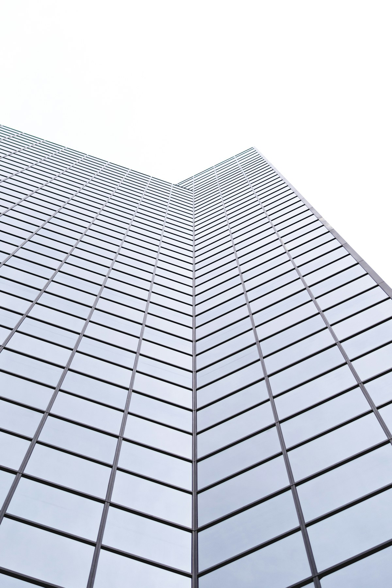

PRECISION IN EVERY DETAIL
專業機電工程
成就卓越建築.
PROFESSIONAL
ELECTROMECHANICAL ENGINEERING
以專業技術與嚴謹工程管理，
打造安全、穩定且高效的建築環境。
SCROLL TO EXPLORE建築情境示意 · 非本公司工程實績

BUILDING OUR FUTURE2020年
睿洋機電・成立起點
PROJECT PORTFOLIO04
以專業實力
實現每一項工程.
每一項工程，都是專業的累積。
工程實績資料準備中工程實績，待新增
工程資料與實際案例照片尚待提供，確認後將於此呈現。
LATEST NEWS06
最新消息.
關注睿洋，
掌握我們的最新動態。
目前尚無公開消息
公司消息與工程動態將於確認後更新，敬請關注。
CONTACT US08
期待與您合作.
讓專業連結需求，讓合作創造可能。
HSINCHU HEAD OFFICE
新竹總公司
新竹縣竹東鎮頭重里頭重埔48-11號
地址待公司確認TAICHUNG OFFICE
台中辦公處
台中市西屯區大容東街88號4樓之3
地址待公司確認聯絡資訊準備中
電話、電子郵件及 LINE 聯絡資訊待公司提供。